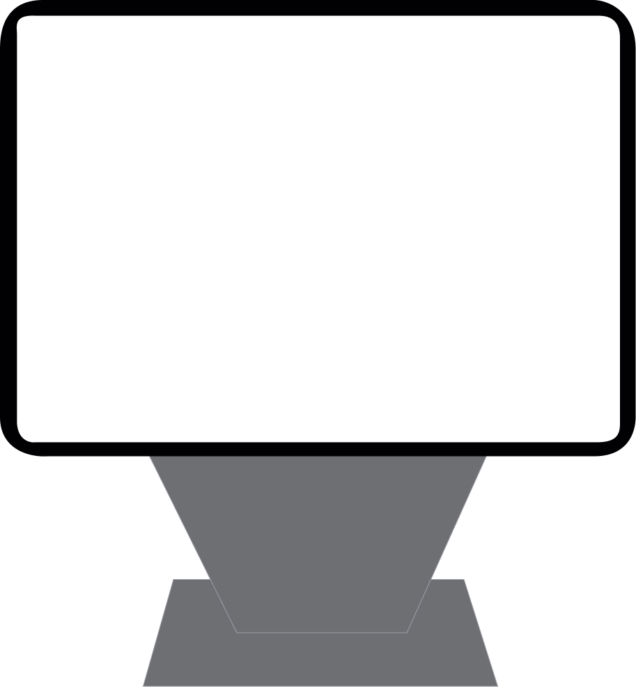
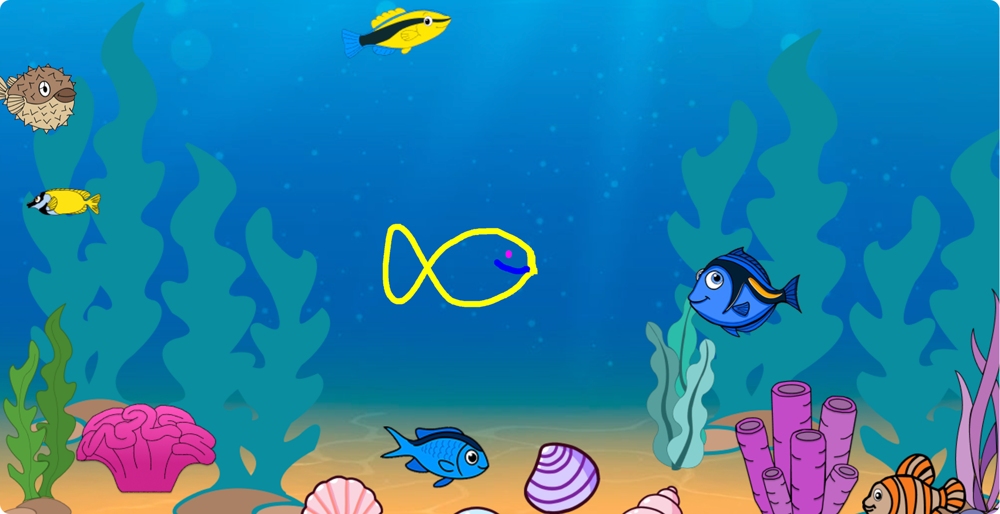
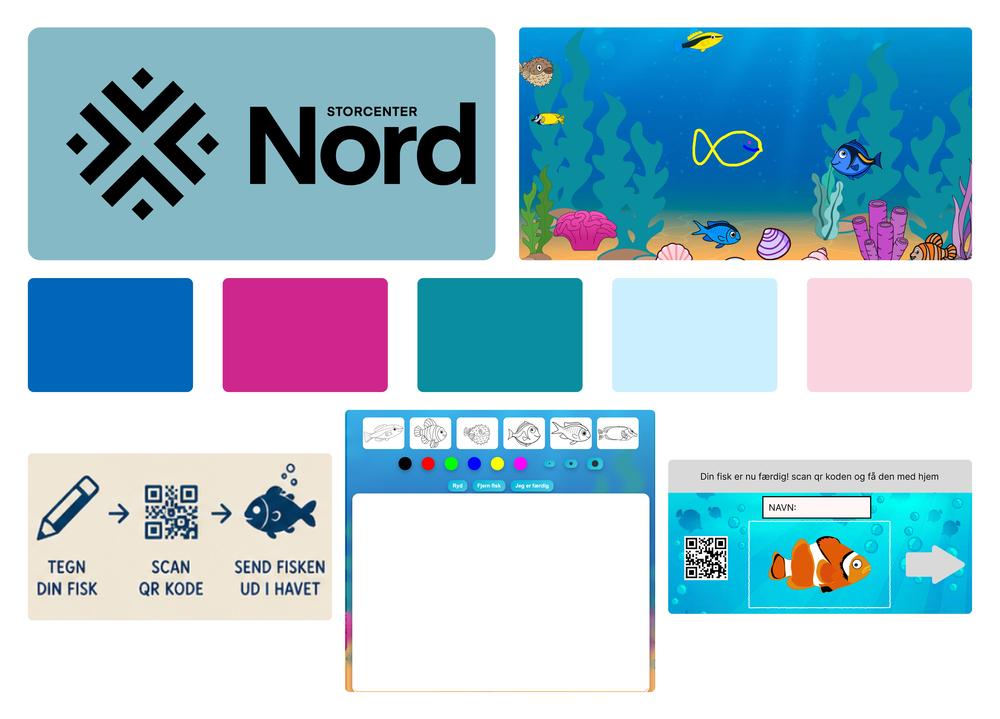

Lærende, Interaktiv & Leg

Projektet blev udviklet som en interaktiv touchskærm til akvariet i Storcenter Nord med fokus på at skabe en lærerig og engagerende oplevelse for børn og børnefamilier.
Målet var at kombinere læring og leg gennem en enkel interaktiv oplevelse, hvor brugeren blandt andet kan vælge en skabelon, tegne sin egen fisk, scanne en QR-kode og følge fisken videre ud i havet.
Løsningen er designet til at være intuitiv, farverig og nem at gå til, så børn hurtigt kan forstå, hvordan de skal interagere med skærmen.


Da målgruppen primært er børn og børnefamilier, skulle løsningen være visuelt tydelig, legende og let at forstå uden behov for lange instruktioner.
Vi arbejdede derfor med en Tone of Voice, der er:
Vi valgte samtidig at undgå komplicerede tekster, sort/hvid grafik og et for voksent udtryk. I stedet brugte vi korte tekster, tydelige knapper og farverige illustrationer.
Designprocessen startede med research, interviews med børnefamilier og observationer af akvariet i Storcenter Nord. Vi undersøgte, hvordan området blev brugt, og hvad der kunne gøre akvariet mere interessant og interaktivt for børn.
Herefter arbejdede vi med brainstorms, inspiration, moodboards og skitser for at finde den visuelle retning. Vi tog udgangspunkt i havet og et farverigt undervandsunivers med fokus på leg, læring og kreativitet.
På baggrund af vores research udviklede vi et simpelt brugerflow, hvor barnet kan vælge en skabelon, tegne sin egen fisk og sende den videre ud i havet.

Projektet blev udviklet gennem en kombination af designværktøjer og webteknologier.
Figma blev brugt til wireframes, prototyping og udvikling af det visuelle design. Her kunne vi afprøve brugerflowet og skabe en interaktiv prototype, inden løsningen blev kodet. Adobe Illustrator blev brugt til at arbejde med illustrationer og grafiske elementer, blandt andet fisk og andre visuelle elementer til undervandsuniverset.
Den fungerende touchskærm blev udviklet med: